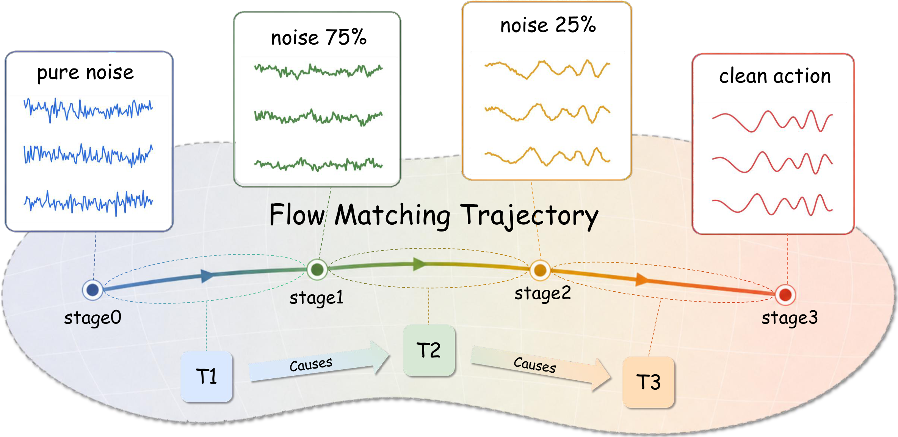
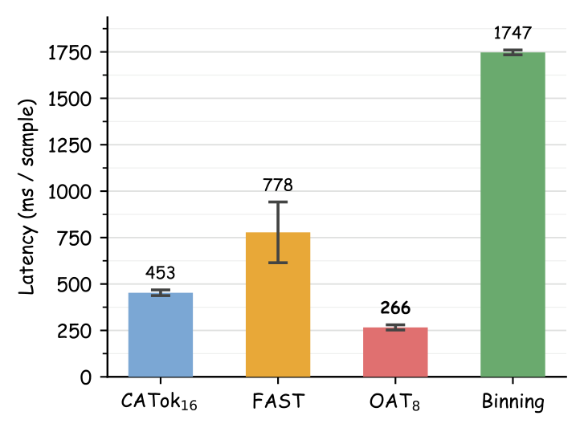
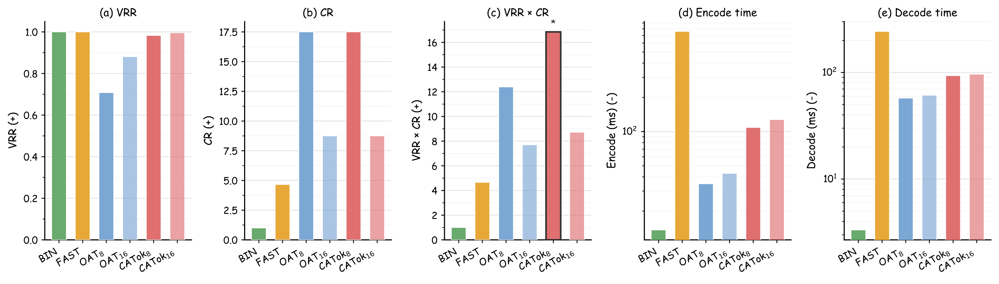
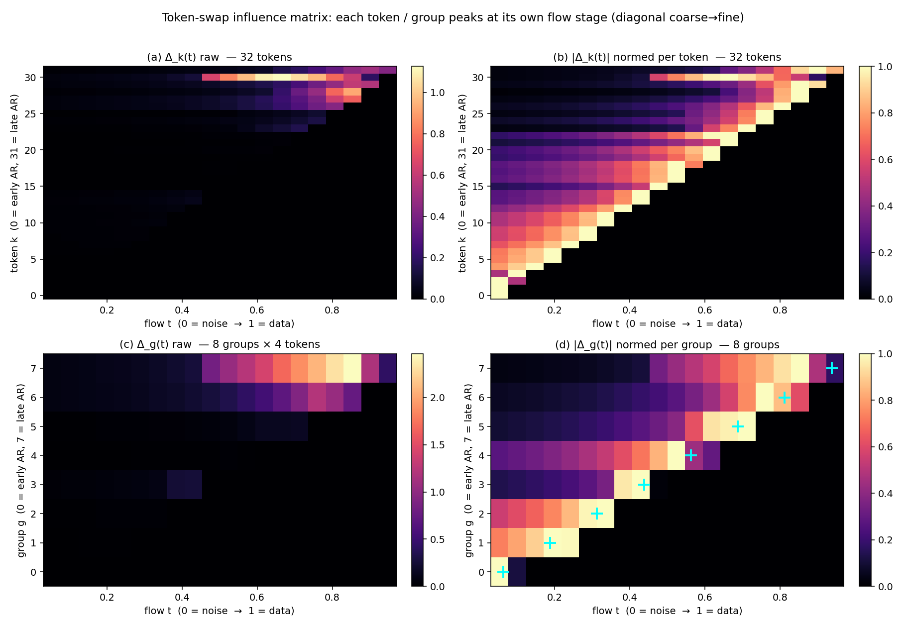
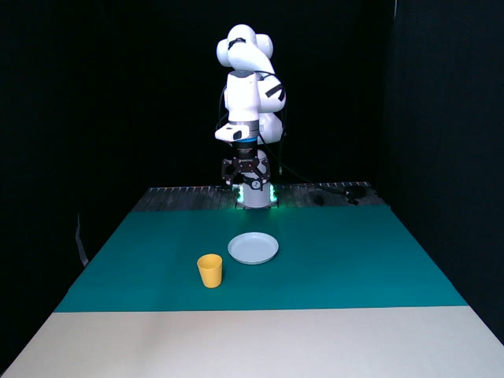
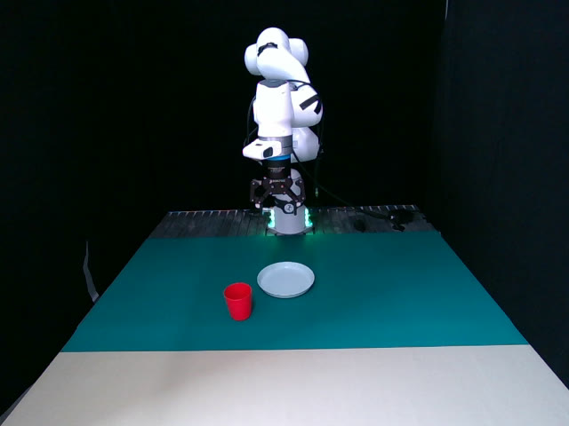

NeurIPS 2026
CATok: Rethinking Causal Action Tokenization with Conditional Annealing in Flow Matching
CATok grounds discrete action tokens in the continuous flow-matching trajectory — a causally ordered, coarse-to-fine action representation for autoregressive VLA models.
1IIIS, Tsinghua University 2Shanghai Qizhi Institute
*Equal Contribution †Corresponding Author

Abstract
Tokenization as a causally structured generative process
Autoregressive Vision-Language-Action (VLA) models offer a scalable path to robot learning, yet existing action tokenizers treat tokenization as a compression problem, producing representations that are semantically misaligned with the autoregressive backbone. We propose CATok, a causal action tokenizer that reframes tokenization as a causally structured generative process.
CATok introduces a conditional annealing mechanism that extracts action tokens by progressively annealing a flow-matching process: each token is conditioned on all preceding tokens and encodes the residual reconstruction signal at a specific noise level, establishing a coarse-to-fine causal token space whose generative semantics are structurally aligned with autoregressive modeling. A token-conditioned flow-matching decoder built on Multimodal Diffusion Transformer (MMDiT) reconstructs continuous action chunks from these discrete tokens with the precision of hybrid diffusion-head architectures. This discrete bottleneck enforces knowledge insulation by design, cleanly separating high-level semantic reasoning from low-level motor execution without requiring explicit attention masking.
Extensive evaluations across three simulation benchmarks demonstrate that CATok consistently surpasses existing tokenization methods in reconstruction fidelity–compression tradeoff and inference efficiency, while improving VLA task success rate, establishing a high-performance, scalable foundation for purely autoregressive VLA systems.
Method
Three components, one causal schedule
01
Dual-Stream Action Encoder
Maps raw action chunks into a compact set of latent query tokens via co-attention with an MMDiT-based transformer.
02
Bottleneck Vector Quantizer
Discretizes latent tokens into a finite codebook using factorized codes.
03
Flow-Matching Decoder
Reconstructs high-fidelity action trajectories with conditional annealing, enforcing a coarse-to-fine causal structure.
The key design is the conditional annealing mechanism: at flow-matching timestep t, the first ⌊tK⌋ token embeddings are progressively masked, forcing each token to specialize in a distinct generative stage—from coarse global guidance at high-noise stages to fine-grained residual corrections as the trajectory matures. This induces a causally ordered hierarchy naturally aligned with autoregressive action generation.


Main Results
Better success rate, faster inference, fewer steps
95.9%
Avg. success on LIBERO
1.7×
Faster VLA inference than FAST
3.6×
VRR×CR of FAST at equal tokens
~50%
Steps to match the best baseline
We evaluate CATok on three simulation benchmarks—LIBERO, SimplerEnv (Simpler-Bridge), and RoboTwin 2.0—against three representative tokenizer baselines: BIN (uniform per-dimension discretization), FAST (DCT-based compression with BPE tokenization), and OAT (learned fixed-length tokenizer with prefix-based decoding).
- Higher task success rate. CATok achieves the highest success rates across all benchmarks (95.9% avg. on LIBERO), with the largest gains on long-horizon tasks (LIBERO-Long: 91.0% vs. 90.1% for FAST).
- Faster inference. 1.7× faster VLA inference than FAST and 3.9× faster than BIN, enabling more responsive real-time deployment.
- Better fidelity–compression balance. 3.6× stronger VRR×CR score than FAST at the same token count.
- Higher training efficiency. Higher success rates at the same training step count, attributable to stage-wise token factorization.
| Method | LIBERO | Simpler-Bridge | RoboTwin 2.0 | |||||||||
|---|---|---|---|---|---|---|---|---|---|---|---|---|
| Spatial | Object | Goal | Long | Avg. | Spoon | Carrot | Stack | Eggplant | Avg. | Clean | Rand. | |
| BIN | 0.586 | 0.878 | 0.680 | 0.604 | 0.687 | 0.542 | 0.333 | 0.208 | 0.708 | 0.448 | 0.213 | 0.221 |
| FAST | 0.960 | 0.998 | 0.962 | 0.901 | 0.955 | 0.500 | 0.375 | 0.375 | 0.625 | 0.469 | 0.478 | 0.478 |
| OAT | 0.428 | 0.876 | 0.704 | 0.276 | 0.571 | 0.417 | 0.208 | 0.167 | 0.667 | 0.365 | 0.229 | 0.233 |
| CATok (Ours) | 0.978 | 0.994 | 0.954 | 0.910 | 0.959 | 0.458 | 0.417 | 0.542 | 0.542 | 0.490 | 0.489 | 0.531 |
Table 1 · Simulation benchmarking results. Accent bold marks the best result per column.



Analysis
Causal tokens with generative semantics
Causal Predictive Ordering. Per-token Shannon entropy decreases monotonically in the forward token order (Figure 6a), while reversing the order flips the trend—confirming the learned ordering is directional and causal. FAST and BIN show no such structure.
Stage-wise Generative Semantics. t-SNE of VQ embeddings (Figure 6b) reveals clear slot-dependent geometry: early tokens form smooth elongated regions, late tokens form compact separated clusters. Prefix reconstructions (Figure 6c) show coherent coarse-to-fine trajectory updates, confirming each token contributes a distinct generative increment.

Causality Validation
Coarse-to-fine token roles, validated by intervention
We use a native-decoder intervention—a donor-swap at the velocity level—to characterize the generative roles of individual token positions. Under conditional annealing, token k is bound to flow stage k via suffix masking, so as flow matching refines the trajectory from high- to low-noise stages, each token is trained to contribute at a particular refinement stage. We examine whether the learned tokens acquire distinct, flow-stage-aligned effects and a coarse-to-fine functional progression in action space; here, “coarse-to-fine” denotes the granularity of learned control information along the refinement process, not a prescribed frequency or fixed-basis decomposition.
Donor-swap influence matrix
We use the trained CATok tokenizer checkpoint (K=32, codebook 4096, horizon 20), its MMDiT velocity network vθ, and its ODE decoder D—the same modules used at inference, not a separately trained prefix decoder. We encode 128 held-out Franka action chunks (7-DoF + gripper) as Q = (q1, …, qK). For each token k, we replace its embedding with the same-position embedding from a donor chunk—keeping the intervention within the slot’s empirical distribution—while holding xt, t, and the noise realization fixed, so the resulting change isolates token k’s effect on the velocity prediction. Because conditional annealing masks token k outside its active range, we normalize its effect within that range.

- Schedule-consistent support. Token k is visible only for t < (k+1)/K, consistent with the suffix-masking schedule κ(t) = tK.
- Stage-specific peaks. Each token’s peak influence occurs near its assigned stage t* ≈ k/K, with corr(k, t*) = 0.985 (0.995 after grouping). Early tokens peak at high-noise (coarse) stages and late tokens at low-noise (fine) stages.
Real-World Deployment
From simulation to the physical world
To verify that CATok transfers to real-robot deployment under camera noise, lighting variation, and hardware differences, we design a suite of real-robot evaluation tasks. We collect 362 trajectories of “pick up the yellow cup and place it on the plate” and 220 trajectories of “stack the cups”. Using Qwen3.5-VL as the backbone, we train two VLAs that differ only in their tokenizer—QwenFAST and QwenCATok. CATok is pretrained on the collected real-robot data together with InternA1 joint data, so that its action reconstruction accuracy matches that of FAST.



Rollout comparison
Figure 8 · Real-world rollout comparison. Top row: QwenCATok (ours); bottom row: QwenFAST. Each cell is a single, unedited end-to-end rollout.
| Method | Pick-Spatial | Pick-Color | Stack-Long |
|---|---|---|---|
| QwenFAST | 0.45 | 0.30 | 0.275 |
| QwenCATok (Ours) | 0.65 | 0.50 | 0.475 |
Table 2 · Real-world success rates. QwenCATok improves over QwenFAST by +20pp absolute on all three tasks.
These real-world gains corroborate the mechanisms identified in simulation. CATok’s causally structured token space aligns the discrete bottleneck with the autoregressive backbone, and this semantic alignment generalizes to real-world perturbations: spatial repositioning (Pick-Spatial, 0.45→0.65, +44% relative) and out-of-distribution color (Pick-Color, 0.30→0.50, +67% relative). The largest gain appears on Stack-Long (0.275→0.475, +73% relative), consistent with the stage-wise causal factorization that drives training efficiency in simulation—by making each token prediction more informative, causal token ordering lets the policy better capture the long-range temporal dependencies required for compositional, long-horizon tasks.
Citation
BibTeX
@article{zhang2026catok,
title = {Rethinking Causal Action Tokenization with Conditional Annealing in Flow Matching},
author = {Zhang, Chenyu and Cao, Yuhang and Du, Daru and Lu, Yingxi and Shao, Jing and Chen, Ruoqu and Liu, Jiajun and Cao, Liu and Liu, Yicheng and Zhao, Hang and Xu, Mengdi},
journal = {arXiv preprint arXiv:2609.35469},
year = {2026}
}